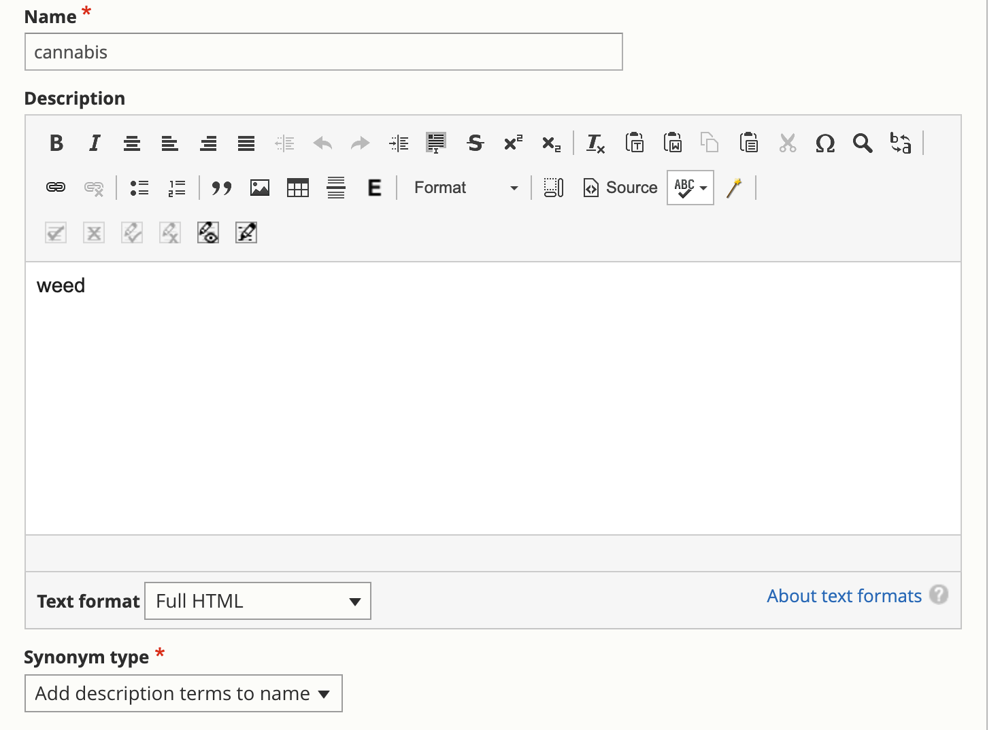

Manipulating Search¶
Synonyms¶
The search synonyms taxonomy allows us to:
Replace a search term with another search term
Expand a search term with additional search terms
The search synonym taxonomy:
The name is the search term as entered by the user
The description is what is used to replace or expand
The synonym type is either:
Replace name with description.
Add description terms to name.
Replacing a search term¶
This feature is helpful for misspellings. For example, a synonym of divrce with a description of divorce will result in the system searching just for divorce.
Add description terms to name¶
This feature is helpful for true synonyms. For example, adding weed as a synonym for cannabis with a type of “add description terms to name” will return content with either term.
Best Bets¶
Best bets allow us to designate a specific node as the “best bet” for a specific search term. The user must enter the exact search term for the best bet to be picked up.
This feature is only available for the following content types:
Legal content
Portal main page
Toolboxes
Note
Only one node can be associated with a search term as a best bet. If anyone attempts to add a duplicate, the following message will appear: “One or more of your search terms already has a best bet. Please review the best bet report and remove duplicates.”
Todo
We need to build the best bet report.